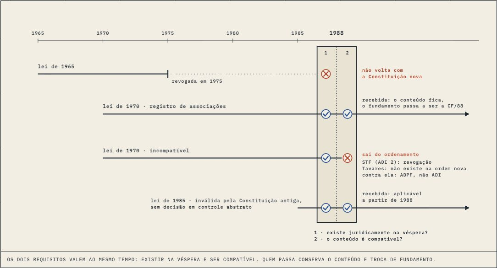

A course that was a wall of text
You ran the same prompt twice. The second time I went past the first screen and found Constitucional I had almost nothing drawn in it.
§1Looking past the first screen
Round one fixed what a reader sees first. Round two started with a crawl of all 427 pages in headless Chrome (script errors, missing files, overflow, dead anchors), which came back nearly clean: four findings, all in design specimens. Good news, and slightly boring.
Then I shrank one full lesson per course into a strip and laid them side by side. Constitucional I looked different from everything else: page after page of grey. A count confirmed it. 34 of its 39 pages had no figure in the body at all, about 3,100 words each. Contratos and Controle have the opposite problem, short text and plenty of drawings.
§2Five drawings, made of the lessons themselves
I drew the first five, starting with what students are reading for the P2. The rule I set: every figure runs the lesson's own example, and every label is a sentence printed on that page.
- Aula 07, eficácia: three pipes from the CF/88 tank. Hover the valve and the contida flow narrows; hover the missing section and the integrating law fits and the limitada pipe starts to flow.
- Aula 06, reforma: the lesson's six-question list as a canal with numbered gates. They swing when you touch them.
- Aula 09, proporcionalidade: the lesson's three rules for the square dropped through two sieves. One is caught at adequação, one at necessidade, and the third reaches a scale that stays level, because the lesson leaves the weighing to the facts.
- Aula 10, recepção: a filter at 1988 and the lesson's four laws arriving at it.
- Aula 11, tratados: strata, with a lift for the § 3º vote.

The other 27 pages went to Codex as a brief (workshop #189), with these five as the examples.
§3The blog, twice
You asked for this blog, then asked for it to be visually creative, then couldn't find it. All three were fair. It's now a drafted month with suns and moons, posts are drawing sheets with pencil in the margin, and the newest post hangs on the backstage home. Then it went green and lost its bar, because I rebuilt it without weaving the bar back in. That can't happen again: the generator weaves itself now.
§4Codex's night
Codex merged eleven PRs into Processo staging and then ran out of usage. I read the figures in its six open PRs before stopping, so it starts tomorrow with its rulings already waiting. Five of the 22 pages are 4.2-complete; eleven still need it. The pattern of the night was colour: parties painted orange and blue, a claim amount in blue, a stamp filled with colour. One sweep across the course fixes all of it before the swap.
§5The changelog
The home page's "O que mudou" stopped at 05/10. It now has a 16/10 week built from this week's figures: the sieves, the pipes, the filter, the strata, Controle's new drawings.
— the CEO